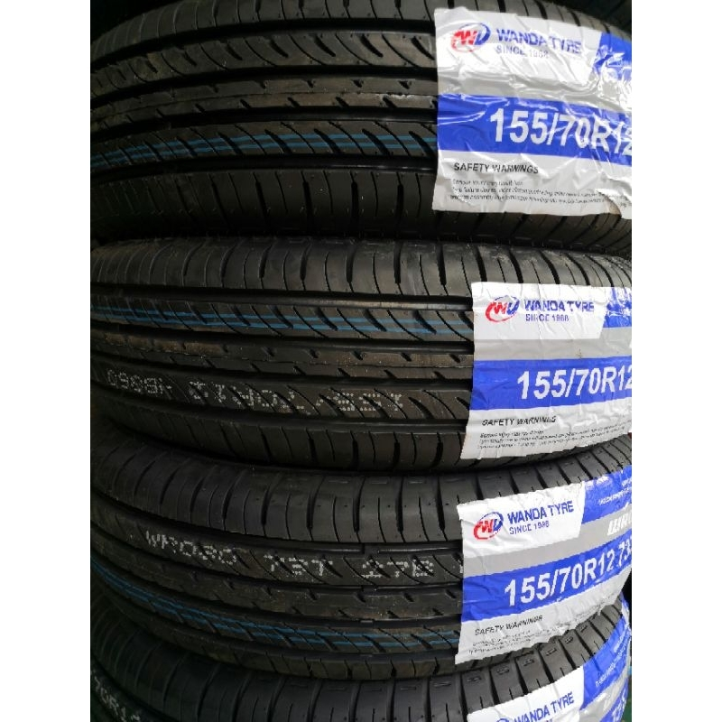

JOURNEY WR080 155/70R12

RM 80.00
JOURNEY WR080 – 155/70R12 73T. An economical passenger car tyre designed for comfortable everyday driving, offering stable handling and dependable wet and dry road performance. Four longitudinal grooves combined with lateral grooves help improve water evacuation and reduce aquaplaning risk. Its centre rib enhances straight-line stability and steering response, while the optimized tread pattern helps reduce road noise and improve ride comfort. Tyre Size: 155/70R12 Load Index: 73 (365 kg) Speed Rating: T (190 km/h) Load Version: Standard Load (SL) Type: Passenger Car / Summer Tyre Tread Depth: 7.4 mm Standard Rim Width: 4.50B Overall Diameter: 523 mm Section Width: 157 mm Maximum Inflation Pressure: 250 kPa Run Flat: No
Klang Hock Li Tyre Services Sdn Bhd, Klang, Selangor, Malaysia.
View live product details and enquire